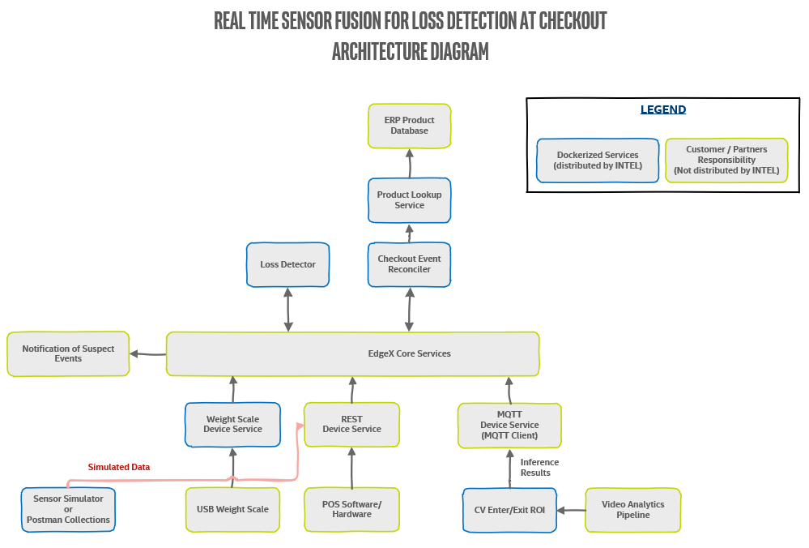

Real Time Sensor Fusion for Loss Detection at Checkout Reference Design
Introduction
This guide helps you build and run the Real Time Sensor Fusion for Loss Detection at Checkout Reference Design.
Upon completing the steps in this guide, you will be ready to integrate sensors and services to build your own complete solution.
Info
This guide does not create a complete, ready-to-use solution. Instead, upon completing the steps in this guide, you will be ready to integrate sensors and services to build your own Real Time Sensor Fusion for Loss Detection at Checkout solution.*
Block Diagram
The high-level diagram below shows the sensors and services used with the Real Time Sensor Fusion for Loss Detection at Checkout Reference Design. The diagram shows the sensors and services, and how they communicate through EdgeX. Intel provides the services outlined in green, and you must obtain EdgeX and the sensors and services in pink. 
Prerequisites
The following items are required to build the Real Time Sensor Fusion for Loss Detection at Checkout Reference Design. You will need additional hardware and software when you are ready to build your own solution.
- Point-of-Sale (POS) of choice. You must use a POS that integrates with either the EdgeX REST or MQTT Device. See POS Events for information about integration with the EdgeX Device Services to send POS Events
- Docker
- Docker-Compose
- Go 1.12+
- GIT
- make
Recommended Domain Knowledge
- MQTT
- REST
- POS systems, including customizations (Transactions, Real-Time Transaction Log (RTTL))
- Computer Vision concepts, if using CV Components
- RFID concepts, if using RFID Components
Getting Started
Step 1: Clone the repository
git clone https://github.com/intel-iot-devkit/rtsf-at-checkout-reference-design && cd ./rtsf-at-checkout-reference-design
Step 2: Build the Reference Design
You must build the provided component services and create local docker images. To do so, run:
make docker
Note
This command may take a while to run depending on your internet connection and machine specifications.
Success
After running this command , you should see the following docker images when running docker images:
rtsf-at-checkout/event-reconcilerrtsf-at-checkout/device-scalertsf-at-checkout/product-lookuprtsf-at-checkout/loss-detectorrtsf-at-checkout/rsp-controller-event-handlerrtsf-at-checkout/cv-region-of-interest
Failure
If you do not see all of the above docker images, scan the the console output and look for errors. Sometimes dependencies fail to resolve and must be run again. To try again,
simply repeat the make docker command.
Step 3: Build EdgeX REST Device service
The EdgeX REST device service is currently the process of being released. Until a release docker image is available via Edge Foundry, we must build it locally by running the following command:
make device-rest
This make target will clone the device-rest-go repo and build the docker image.
Success
After running this command , you should now see the following docker image (along with the images from Step 2) when running docker images:
edgexfoundry/docker-device-rest-go
Failure
If you do not see the above docker image, scan the the console output and look for errors. Sometimes dependencies fail to resolve and must be run again. To try again,
simply repeat the make device-rest command.
Step 4: Use docker-compose to start the reference design suite. To do so, use
make run-base
This command starts all the EdgeX services and then starts all the Loss Detection services.
Success
After running this command, you should now see the following output when running docker ps --format 'table{{.Image}}\t{{.Status}}':
| IMAGE | STATUS |
|---|---|
| rtsf-at-checkout/product-lookup:dev | Up 3 minutes |
| rtsf-at-checkout/loss-detector:dev | Up 3 minutes |
| rtsf-at-checkout/event-reconciler:dev | Up 3 minutes |
| rtsf-at-checkout/rsp-controller-event-handler:dev | Up 3 minutes |
| rtsf-at-checkout/device-scale:dev | Up 3 minutes |
| edgexfoundry/docker-device-rest-go:0.0.0-dev | Up 3 minutes |
| edgexfoundry/docker-device-mqtt-go:1.1.0 | Up 3 minutes |
| edgexfoundry/docker-support-scheduler-go:1.1.0 | Up 3 minutes |
| edgexfoundry/docker-core-command-go:1.1.0 | Up 3 minutes |
| edgexfoundry/docker-core-data-go:1.1.0 | Up 3 minutes |
| edgexfoundry/docker-support-notifications-go:1.1.0 | Up 3 minutes |
| edgexfoundry/docker-core-metadata-go:1.1.0 | Up 3 minutes |
| edgexfoundry/docker-support-logging-go:1.1.0 | Up 3 minutes |
| edgexfoundry/docker-core-config-seed-go:1.1.0 | Exited (0) 3 minutes ago |
| edgexfoundry/docker-edgex-mongo:1.1.0 | Up 3 minutes |
| consul:1.3.1 | Up 3 minutes |
| edgexfoundry/docker-edgex-volume:1.1.0 | Up 3 minutes |
| eclipse-mosquitto:1.5.8 | Up 3 minutes |
If any of these service show that they have exited other than edgexfoundry/docker-core-config-seed-go:1.1.0, try running make run-base again.
Step 5: Dive in
At this point you now have all of the core components of RTSF at Checkout up and running, You are now ready to begin walking through the following phases.
- Phase 1 - Simulates Data using either Postman or our provided Event Simulator
- Phase 2 - Integrate POS software using either an open-source POS or your own proprietary POS system.
- Phase 3 - Integrate your own hardware to complete an end-to-end loss prevention system
How to Use the Compose Files
The docker-compose files are divided up to let you bring up or take down individual sensor ingestion components. Visit each individual GitHub subrepository to learn about the responsibility of each service.
| Compose File | Purpose | Command |
|---|---|---|
| Portainer | Container management | docker-compose -f docker-compose.portainer.yml up -d |
| EdgeX and its components | docker-compose -f docker-compose.edgex.yml up -d |
|
| Real Time Sensor Fusion for Loss Detection at Checkout Core Services and its components | docker-compose -f docker-compose.loss-detection.yml up -d |
|
| RFID Components (Intel® RSP SW Toolkit) | docker-compose -f docker-compose.rsp.yml up -d |
|
| Video Analytics Pipeline (VAP) | docker-compose -f docker-compose.vap.yml up -d |
Components to Build a Solution based on this Reference Design
The reference design you created is not a complete solution. It provides the base components for creating a sensor fusion based framework. It is your choice on how many and which sensors to include. This section provides information about components you might want to include or replace.
Components to Consider Adding
| Component | Description |
|---|---|
| Security scale in bagging area | A Scale Device service is provided for a CAS USB scale. As an alternative, you can have Scale Events sent to either the EdgeX REST or MQTT Device Services. For more information, see Scale Events and integrating with the EdgeX Device Services to send the Scale Events. |
| Computer Vision (CV) Object Detection Model | The Intel® Distribution of OpenVINO toolkit-based object detection model used by the Video Analytics Pipeline (VAP) service is provided as an example, but is not intended for your final solution. The VAP and CV ROI Enter Exit service in this reference design create the CV ROI Events that are sent to the EdgeX MQTT Device Service. See CV ROI Events. |
| Intel® RFID Sensors | This reference design relies on the Intel® Retail Sensor Platform (Intel® RSP) https://software.intel.com/en-us/retail/rfid-sensor-platform which has its own custom EdgeX Device Service which it sends RFID events. These events are transformed into RFID ROI Events by the provided RSP Controller Event Handler service. See below for details on RFID ROI Events.This RSP has its own custom EdgeX Device Service to which it sends RFID events. These events are transformed into RFID ROI Events by the provided RSP Controller Event Handler service. If you are interested in Intel® RSP RFID Sensors, see https://software.intel.com/en-us/retail/rfid-sensor-platform#buy |
| Reconciler Service | This service provided does the analytics of reconciling all the sensor events to identify suspect items. As an option, you can replace the provided service with a more advanced service. |
| Detector Service | The service provided demonstrates how to send an email notification using the EdgeX Notifications service. The contents of the email is a simple JSON list of suspect items. As an option, you can replace the provided service with a more advanced service. |
| Computer Vision Region of Interest (ROI) Solution | If you chose to create your own complete Computer Vision object detection and CV ROI enter/exit solution. Exclude running the components in the docker-compose.vap.yml compose file and remove the cv-region-of-interest from the docker-compose.loss-detection.yml compose file. Integrate your CV solution with either the EdgeX REST or MQTT Device Services to send the CV ROI events. |
Components to Consider Replacing or Enhancing
| Component | Description |
|---|---|
| Reconciler service | The Reconciler Service performs the analytics of reconciling the sensor events to identify suspect items. While the service provided performs adequately, your analytics team might be able to improve on this reference implementation. |
| Detector Service | The Dectector Service demonstrates how to send email notifications using the EdgeX Notifications service. The email message content is a simple JSON list of suspect items. |
| Product Lookup Service | This service provided is a basic implementation of a Product Information Management Lookup service. It uses a JSON file as a database for the product information. It is recommended that you replace the service with an Enterprise Resource Planning (ERP) System. |
| RFID services | If you choose to use a different RFID solution, in addition to providing your integration to generate the RFID ROI Events you will need to exclude running the components in the docker-compose.rsp.yml compose file and remove the rsp-controller-event-handler from the docker-compose.loss-detection.yml compose file. You will also need to integrate your RFID solution with either the EdgeX REST or MQTT Device Services to send the RFID events. See below for details on RFID ROI events and integrating with these EdgeX Device Services to send RFID ROI events. |
Data Dictionary
The data dictionary table below describes the JSON object fields for the Real Time Sensor Fusion for Loss Detection at Checkout Events.
| Field Name | Data Type | Events used in | Description |
|---|---|---|---|
| lane_id | string | All | Unique identifier of the self checkout lane |
| event_time | number | All | Unix nanosecond timestamp of when the event occured |
| basket_id | string | All POS Events | Unique identifier of self checkout session basket |
| customer_id | string | All POS Events | Optional unique identifier of the customer using the self checkout. |
| employee_id | string | All POS Events | Optional unique identifier of the employee overseeing the self checkout. |
| product_id | string | POS Scanned Item | Unique identifier of the product that was scanned. This reference design expects a 14 digit UPC |
| product_id_type | string | POS Scanned Item | Type of the associated product ID. Value can be UPC, SKU, or PLU. This reference design expects UPC |
| product_name | string | POS Scanned Item | Name of the product that was scanned |
| quantity | number | POS Scanned Item | Quantity of the products that were scanned |
| quantity_unit | string | POS Scanned Item | Units for the associated quantity. Values can be EA, Each, lbs, g, kg or ozThis reference design expects EA, Each, or lbs |
| unit_price | number | POS Scanned Item | Price of the individual products scanned. |
| scale_id | string | Scale Item | Unique identifier for the scale sending the events |
| total | number | Scale Item | Total weight for items on the scale |
| units | string | Scale Item | Units for the associated total weight. Values can be lbs, g, kg or oz This reference design expects lbs |
| product_name | string | CV ROI | Unique identifier of the product identified by CV object detection. |
| roi_action | string | CV ROI & RFID ROI | Action of the associate product identified. Value can be either ENTERED or EXITED. |
| roi_name | string | CV ROI & RFID ROI | Name of the region that the associate product was identified with. See the Configuration section above for details on how these names after configured. |
| epc | string | RFID ROI | Unique EPC code of the product identified by RFID |